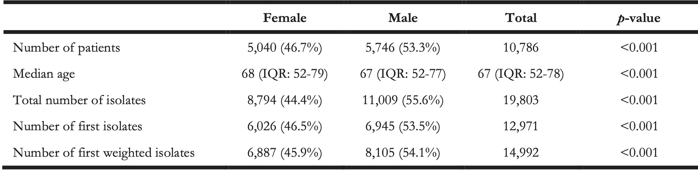
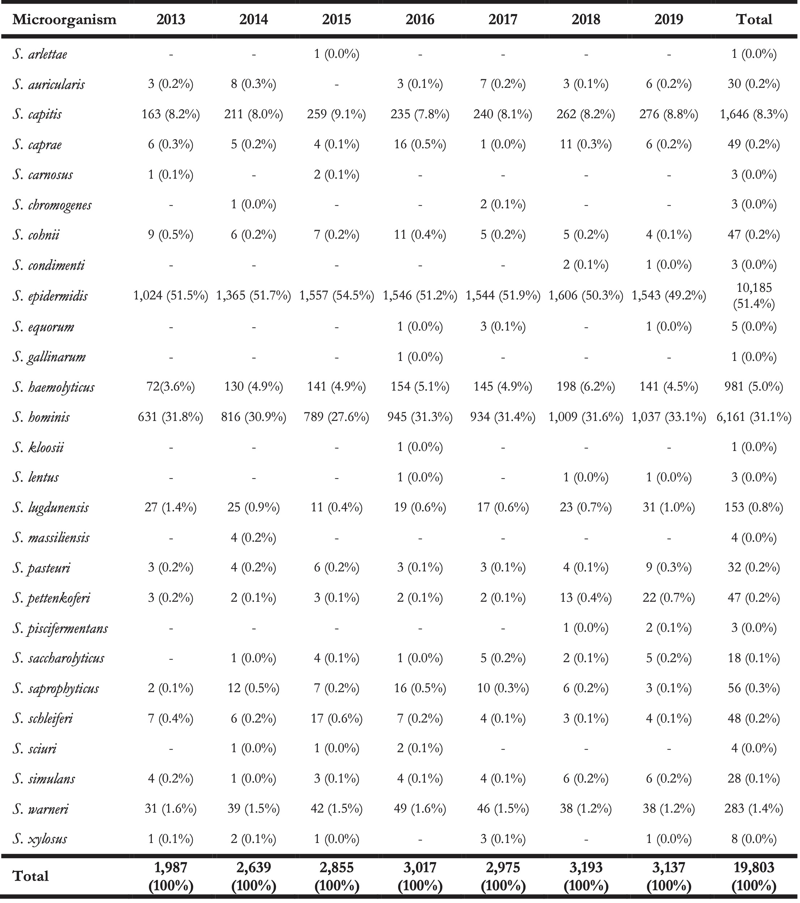
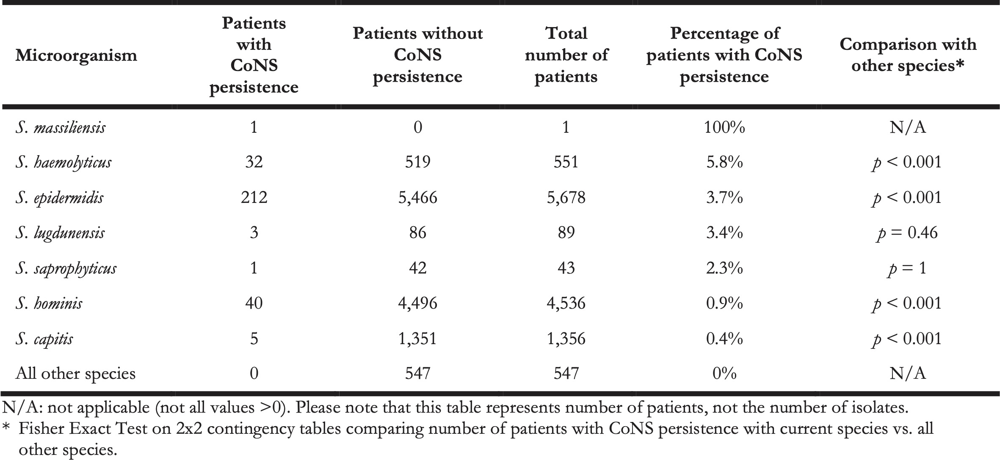
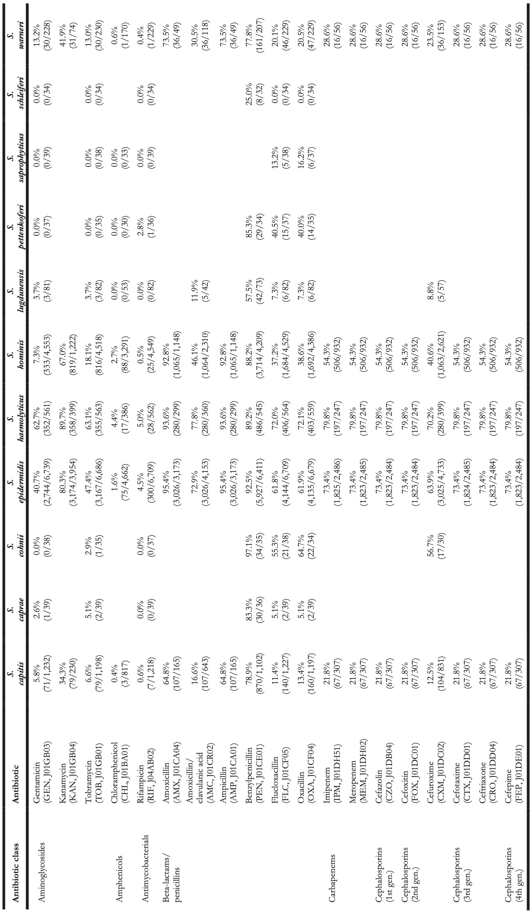
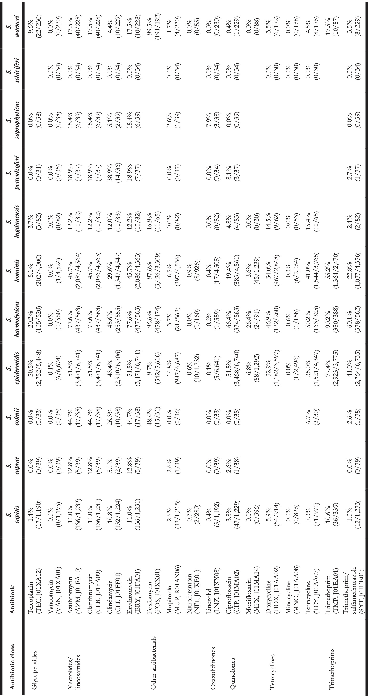

7 Trends in Occurrence and Phenotypic Resistance of Coagulase-Negative Staphylococci (CoNS) Found in Blood in the Northern Netherlands between 2013 and 2019
In preparation
Berends MS 1,2, Luz CF 2, Ott A 1, Andriesse GI 1, Becker K 3,4, Glasner C 2‡, Friedrich AW 2‡
- Certe Medical Diagnostics and Advice Foundation, Groningen, the Netherlands
- University of Groningen, University Medical Center Groningen, Department of Medical Microbiology and Infection Prevention, Groningen, the Netherlands
- Institute of Medical Microbiology, University Hospital Münster, Münster, Germany
- Friedrich Loeffler-Institute of Medical Microbiology, University Medicine Greifswald, Greifswald, Germany
‡ These authors contributed equally
7.1 Abstract
For years, coagulase-negative staphylococci (CoNS) were not considered a cause of bloodstream infections (BSIs) and were often regarded as contamination. However, the association of CoNS with nosocomial infections is increasingly recognised in research and clinical practice. At present, the CoNS group consists of 45 different species. Their identification has mainly been driven by the introduction of matrix-assisted laser desorption/ionisation time-of-flight (MALDI-TOF) mass spectrometry. Yet, treatment guidelines consider CoNS as a whole group and rarely differentiate between species, despite increasing antibiotic resistance (ABR) in CoNS. Therefore, this retrospective study provides an in-depth analysis of CoNS isolates and their ABR profiles found in blood culture isolates between 2013 and 2019 in a novel full-region approach including the entire region of the Northern Netherlands. In total, 10,796 patients were included that were hospitalised in one of the 15 hospitals in the region leading to a sample of 14,992 first CoNS isolates for (ABR) data analysis. CoNS accounted for 27.6% of all available 71,632 blood culture isolates. EUCAST Expert rules were applied to correct for errors in antibiotic test results. A total of 27 different species were found. Major differences were observed in the occurrence and ABR profiles of the different species. The top five species covered 97.1% of all included isolates: S. epidermidis (48.4%), S. hominis (33.6%), S. capitis (9.3%), S. haemolyticus (4.1%), and S. warneri (1.7%). Regarding ABR, S. epidermidis and S. haemolyticus showed 50-80% resistance to teicoplanin and macrolides while resistance to these agents remained lower than 10% in most other CoNS species. Yet, such differences are neglected in national guideline development causing a focus on ‘ABR-safe’ agents such as glycopeptides. Nonetheless, other agents could be considered viable options for some species where ABR never surpassed 10%. In conclusion, a multi-year, full-region approach to extensively assess the trends in both the occurrence and AMR of CoNS species was carried out which could be used for evaluating treatment policies and understanding more about these important but still too often neglected pathogens.
7.2 Introduction
Sepsis is a syndrome of physiologic, pathologic, and biochemical abnormalities induced by bloodstream infections (BSIs). It is the most frequent cause of death in hospitalised patients and has been recognised by the WHO as a global health priority [1,2]. For years, coagulase-negative staphylococci (CoNS) were not considered a cause of BSIs and were often regarded as contamination [3]. Yet, it has been shown that CoNS can cause BSIs and a high mortality rate [4,5], especially in immunocompromised patients and newborns [6,7]. Moreover, CoNS have become increasingly associated with nosocomial infections [8]. This is attributed to (i) an increase of multimorbid and immunocompromised patients that are more prone to infections, (ii) the increased use of inserted foreign body material in modern medicine, and (iii) the property of CoNS to adapt molecularly to the hospital environment by diverging into new strains [8,9]. Specifically, S. epidermidis and S. haemolyticus are associated with sepsis caused by foreign-body-related infections (FBRIs), such as central line-associated BSIs and prosthetic joint infections [10].
At present, the CoNS group consists of 45 different species [11]. This group is highly heterogeneous in its prevalence in humans and, more importantly, its antibiotic resistance (ABR) patterns. Zooming in on CoNS at the species level is therefore useful to evaluate treatment options for CoNS causing BSI. The clinical interpretation and relevance of BSIs caused by CoNS are dependent on the determination at the species level, since not all species in the CoNS group are pathogenic and associated with sepsis or (other) nosocomial infections [8,12]. While the microbiological diagnosis of BSIs has for decades been based on blood samples cultivated in automated blood-culture systems, molecular and mass spectrometry (MS) approaches enable more reliable microbiological diagnosis [13,14]. Since 2012, matrix-assisted laser desorption/ionisation time-of-flight (MALDI-TOF) MS has become a standard for the identification of bacterial species and has, together with sequencing approaches, led to a rapid discovery of new species compared to formerly used techniques [15,16]. Prior to the use of MALDI-TOF MS, identification of CoNS was primarily performed with biochemical and physiological tests, which yielded variable results, particularly in less prevalent species [16]. Examples include S. warneri, S. auricularis, S. capitis, and other CoNS species that primarily colonise the skin of animals or are found on food products [17]. Due to less specific traditional test techniques, previously reported prevalences and ABR patterns of specific species in the CoNS group may have been unreliable or under-evaluated. Consequently, identification using MALDI-TOF MS has become crucial to analyse species-specific ABR.
ABR is a global healthcare problem and of great concern in the antibiotic therapy of BSIs. This also applies to the CoNS group where multi-drug resistance is common in species circulating in hospitals [18]. The rise of beta-lactam resistance in CoNS species has led to vancomycin as a first-line therapy against CoNS-mediated BSI in many countries, even though information about the pharmacokinetics and pharmacodynamics (PK/PD) of vancomycin against CoNS is limited [5,19–21]. To assess the constant change of ABR in CoNS, geo-spatial and temporal analyses of ABR are required.
In the Netherlands, country-wide ABR analyses are used to develop antibiotic treatment guidelines by the Dutch Working Party on Antibiotic Policy (Stichting Werkgroep Antibiotica Beleid, SWAB) [21,22]. Their recommendations are based on NethMap, an annually released national report about ABR and antibiotic consumption by the Dutch National Institute for Public Health and the Environment (Rijksinstituut voor Volksgezondheid en Milieu, RIVM) [21]. However, this national report does not specify nor address ABR on a patient, hospital, or regional level.
Therefore, to inform clinical decision-makers this cross-sectional retrospective study provides an in-depth ABR analysis of all CoNS isolates found in blood cultures from 2013 until 2019 in the Northern Netherlands that were determined by MALDI-TOF MS. We aim to evaluate the differences in the occurrence of CoNS species and their ABR patterns and to assess their clinical microbiological relevance using a full-region approach.
7.3 Materials & methods
7.3.1 Study setting and patient cohort
This study was performed within the Northern Netherlands (Figure 1), a geographic region with 1.7 million inhabitants [23]. Its three provinces are similar in population density: Drenthe (492,167 inhabitants, 184/km2), Friesland (647,672 inhabitants, 183/km2) and Groningen (583,990 inhabitants, 243/km2) [23]. The study population consisted of 10,786 patients hospitalised with suspected BSI in 15 participating hospitals (14 secondary care, one tertiary care) located within this region between 1 January 2013 and 31 December 2019. All hospitals included at least one intensive care unit (ICU). There was no age restriction on including patients.
Figure 7.1: Locations of the fifteen hospitals in the three provinces in the North of the Netherlands. Between 2013 and June 2018, the region comprised fourteen hospitals; in July 2018, two hospitals merged into one new hospital, leaving a total of thirteen currently active hospitals.
7.3.2 Microbiological and demographic data
All blood cultures were routinely drawn and analysed at one of the three medical microbiological laboratories in the region (Izore, Friesland; Certe, Groningen and Drenthe; University Medical Center Groningen). After routine processing, isolates were included in the study if the species was characterised as a member of the CoNS group and antibiotic test results were available. In the study period, CoNS species were the most prevalent microorganisms isolated from blood and accounted for 27.6% of all available 71,632 blood culture isolates. The following variables were available for all isolates: date, name of laboratory, name of the hospital, age, gender, and ID of the patient and type of ward (ICU, clinical, outward). Genotypic data was not available for this study, as genotyping was not part of routine analysis.
7.3.3 Species determination and antibiotic susceptibility testing (AST)
Routine processing in the laboratories included the incubation of blood cultures allowing the colourimetric detection of CO2 produced by growing microorganisms. Determination of the taxonomic species level was done using MALDI-TOF MS. Two laboratories cultivated blood samples using the BacT/ALERT system (bioMérieux, France) and identified bacterial strains using the VITEK MS system (bioMérieux, France). One laboratory cultivated blood samples using the BACTEC (Becton Dickinson, UK) and identified bacterial strains using the Microflex System (Bruker Corporation, USA). Since the databases of these proprietary systems are not publicly available, a qualitative assessment could not be attained, nor was this available in public literature.
AST was performed using the VITEK 2 Advanced Expert System after isolates were incubated on blood agar plates containing 5% sheep blood (BA+5%SB). Two laboratories used the VITEK 2 P-586 cartridges and one laboratory used the VITEK 2 P-657 cartridge which are both developed specifically for Gram-positive bacteria such as staphylococci. All results were authorised and validated by at least two laboratory technicians and one clinical microbiologist. Since different VITEK 2 cartridges were used, not all isolates were tested for all antibiotics analysed in this study. Supplementary Material 2 contains a full list of all included isolates and their respective AST results.
7.3.4 Selection of bacterial isolates
First isolates were determined and selected using the AMR package for R to exclude duplicate findings following the M39-A4 guideline by the Clinical Laboratory Standards Institute (CLSI) [24,25]. This guideline defines first isolates based on the species level per patient episode, regardless of body site and other phenotypical characteristics. The episode length for this study was defined as 365 days, resulting in the inclusion of a unique species once a year per patient.
In this study, several additions were made in extension to the CLSI guideline. As the CLSI guideline only considers the genus/species per episode, we investigated the added value to include changes in the ABR profile per genus/species and episode. For this purpose, we weighted the ABR profile of six preselected antibiotics, which were specifically chosen based on clinical relevance for Gram-positive bacteria, such as CoNS: erythromycin, oxacillin, rifampicin, teicoplanin, tetracycline, and vancomycin. Any change in these antibiotics from susceptible to resistant or vice-versa within the same species in the same patient within one episode was considered a ‘first weighted isolate.’ ABR analysis results per species were included if at least 30 first isolates were available following the current CLSI guideline [24].
7.3.5 EUCAST rules and antibiotic resistance analysis
European Committee on Antimicrobial Susceptibility Testing (EUCAST) rules were applied to the AST results including EUCAST Expert Rules (v3.1, 2016), EUCAST Clinical Breakpoint Interpretations (v10.0, 2020), and EUCAST rules for Intrinsic Resistance and Unusual Phenotypes [26,27]. All applied changes can be found in Supplementary Table 1. Resistance was defined as the number of isolates with an antibiotic interpretation of R (resistant) divided by the total number of susceptible (S or I) isolates, following the latest EUCAST guideline [27].
7.3.6 Statistical analysis
All statistical analyses were done using R v4.0.3, RStudio v1.4, and the AMR package v1.6.0 [25,28]. To test for linear trends, linear regression analyses were performed. Contingency tables were tested with Fisher’s exact test when the size was 2x2 and Chi-squared tests otherwise. For likelihood ratio tests exact binomial tests were used. Outcomes of statistical tests were considered significant when p < 0.05.
7.3.7 Ethical considerations
Ethical approval and informed consent were not required according to the medical ethical committee of the University Medical Center Groningen (METc M21.277097). All data were anonymised at the associated laboratories before analysis.
7.4 Results
7.4.1 Patients and included isolates
A total of 10,796 patients were included in this seven-year study. The median age was 67 (IQR: 52-78) and 46.7% (n = 5,040) of the patients was female. A total of 19,803 CoNS isolates were included, of which 14,992 isolates were used for ABR analysis based on the “first weighted isolates” algorithm. A selection of first isolates using solely the CLSI guideline [24] would have yielded 12,971 isolates (-13.5%, p < 0.001). On ICUs, 25.7% of the first weighted isolates was found in males compared to 17.0% in females (p < 0.001). The number of ICU patients with CoNS compared to non-ICU patient with CoNS showed a significant difference between secondary care (17.5%, n = 1,403) and tertiary care (24.4%, n = 670, p < 0.001). Yet, no significant difference was observed in the number of CoNS isolates found in ICU patients between secondary care (21.0%, n = 2,191) and tertiary care (22.8%, n = 1,034).
Table 1. Numbers and characteristics per gender of included patients of the included CoNS isolates.

At total of 27 different species of the CoNS group were found within the isolate collection (Table 2). The top five species covered 97.1% (n = 14,560) of all first weighted isolates: S. epidermidis (n = 7,260, 48.4%), S. hominis (n = 5,033, 33.6%), S. capitis (n = 1,395, 9.3%), S. haemolyticus (n = 612, 4.1%), and S. warneri (n = 260, 1.7%).
The remaining 432 isolates (2,9%) consisted of: S. lugdunensis (n = 91, 0.6%), S. saprophyticus (n = 45, 0.3%), S. pettenkoferi (n = 44, 0.3%), S. cohnii (n = 43, 0.3%), S. caprae (n = 40, 0.2%), and 17 other species (n = 169, 1.1%).
Table 2. Overview of the total number of isolated CoNS species (not only first isolates) found between 2013 and 2019 in the Northern Netherlands.

7.4.2 Occurrence of CoNS species
The occurrence of CoNS species was stratified by type of care, type of hospital ward, geographic province, gender, and age (Figure 2). Age was grouped into five groups: 0-11, 12-24, 12-24, 25-54, 55-74, and 75 or more years. When stratifying by species level and the different types of care, the proportion of S. epidermidis among all CoNS isolates was 62.5% in tertiary care (n = 2,834) versus 42.3% in secondary care (n = 4,426; p = 0.049). Overall, S. hominis was less occurrent in tertiary care (20.3%, n = 919) than in secondary care (39.4%, n = 4,114, p = 0.013), while the occurrence of other CoNS species was comparable between secondary and tertiary care. Yet, major differences in relative occurrence were observed between ICU and non-ICU status in secondary care. On secondary care ICUs, S. epidermidis accounted for 55.9% of all first weighted CoNS isolates found while on non-ICU wards this was 39.1% (p < 0.001). In contrast, S. hominis accounted for 25.7% on secondary care ICUs while on non-ICU wards this was 43.3% (p < 0.001). Notably, S. hominis was found 105 times (7.53%) in children under the age of one.
Figure 7.2: The number of first weighted isolates of the top five CoNS species found in the study stratified by (A) type of care, (B) type of hospital ward, (C) province of the Netherlands, (D), gender, and (E) age group.
Although all three provinces in the study region are similar in population density and gender distribution [23], major differences were observed in the occurrence of CoNS species between those provinces in secondary care. The occurrence of S. epidermidis among CoNS species in secondary care hospitals in Friesland was 38.7% in contrast to 43.7% and 45.9% in Drenthe and Groningen respectively (p < 0.001). S. hominis was significantly more often found in secondary care hospitals in Friesland (45.9%) than in Drenthe (33.3%) and Groningen (36.0%) (p < 0.001). Drenthe and Groningen did not differ significantly in the occurrence of CoNS species in secondary care.
Overall, there was no significant change in species distribution over the years. Stratified by gender, a linear increase of S. hominis over time (p = 0.001) and a decrease of S. epidermidis (p = 0.005) was found in males. In females, the occurrence of S. hominis also increased over time (p = 0.008), but no decrease of S. epidermidis or any other species was observed. In age groups, no significant trends in occurrence were observed.
7.4.3 Definition of CoNS persistence
In this retrospective study, it was impossible to differentiate between contaminated blood cultures and BSI-associated blood cultures, as clinical information was not available. Yet, to assess probable cases of BSIs caused by CoNS, we defined ‘CoNS persistence’ as a surrogate. CoNS persistence was defined by at least three positive blood cultures drawn on three different days within 60 days containing the same CoNS species within the same patient. In total, we identified 294 cases of CoNS persistence (Table 3). Aside from S. massiliensis that caused CoNS persistence in only one patient, the relatively most common causal agent of CoNS persistence was S. haemolyticus (5.8%, n = 32, p < 0.001), followed by S. epidermidis (3.7%, n = 212, p < 0.001), and S. lugdunensis (3.4%, n = 3, p = 0.46).
Table 3. The number of patients with and without CoNS persistence per species.

7.4.4 Antibiotic resistance analysis
Clinically relevant antibiotics and their respective ABR profiles were analysed and compared for the top five CoNS species. Figure 3 shows time trends regarding the ABR profiles to ten different clinically relevant antibiotics, while Table 4 contains resistance percentages of all applicable combinations of species and antibiotic agents. In the following subsections, more detail on occurrence and trends is provided per antibiotic class based on Figure 3 and Table 4. Comprehensive ABR analyses per species of all available variables can be found in Supplementary Table 3.
Figure 7.3: Antibiotic resistance of the five most occurrent CoNS (n = 14,560) over time between 2013 and 2019. Lines and points are missing where there were less than 30 isolates available for analysis.
Table 4. Antibiotic resistance in all first weighted CoNS isolates in blood between 2013 and 2019 where at least 30 isolates were available for ABR analysis. Resistance of 100% denotes intrinsic resistance, as defined by EUCAST. Between parentheses are the number of resistant first weighted isolates and the total number of first weighted isolates for that bug-drug combination. The antibiotic names are followed by the official EARS-Net code (European Antimicrobial Resistance Surveillance Network) and ATC code (Anatomical Therapeutic Chemical).

7.4.4.1 Glycopeptides
Vancomycin resistance was found in six S. epidermidis isolates (0.1%) and in one S. hominis isolate (0.0%). Half of all S. epidermidis isolates showed resistance to teicoplanin (50.5%, n = 2,752), which increased over the seven study years (min-max: 44.8%-54.5%, p = 0.001). An increase in teicoplanin resistance was observed in S. haemolyticus (min-max: 10.9%-44.0%, p < 0.001). Teicoplanin resistance remained low in S. capitis (1.4%, n = 17), S. hominis (5.1%, n = 202), and S. warneri (9.6%, n = 22).
7.4.4.2 Macrolides
Erythromycin resistance was highest in S. haemolyticus (77.6%, n = 437), followed by in S. epidermidis (51.5%, n = 3,471), S. hominis (45.7%, n = 2,086), S. warneri (17.5%, n = 40), and S. capitis (11.0%, n = 136). Resistance to azithromycin and clarithromycin was equal to erythromycin resistance, due to EUCAST expert rules. However, resistance to clindamycin remained lower than resistance to erythromycin in all species: 45.6% (n = 253) in S. haemolyticus and 43.4% (n = 2,910) in S. epidermidis, 29.6% (n = 1,347) in S. hominis, 4.4% (n = 10) in S. warneri ,and 10.8% (n = 132) in S. capitis.
7.4.4.3 Fluoroquinolones
The highest ciprofloxacin resistance was found in S. haemolyticus (66.4%; n = 374) and S. epidermidis (51.5%; n = 3,468). Resistance to moxifloxacin was 26.4% (n = 24) in S. haemolyticus and less than 10% in all other species.
7.4.4.4 Beta-lactams/penicillins
Oxacillin resistance was as high as 61.9% (n = 4,135) in S. epidermidis, which was thus the proportion of MRSE (methicillin-resistant S. epidermidis) among all S. epidermidis isolates in this study. Oxacillin resistance in S. haemolyticus was even higher (72.1%, n = 403) but considerably lower in all other CoNS species (13.4%-38.6%). Almost all S. epidermidis, S. haemolyticus, and S. hominis were resistant to amoxicillin (95.4%, 93.6%, and 92.8% respectively), while all other species showed amoxicillin resistance ranging between 64.8% and 73.5%. Resistance to amoxicillin/clavulanic acid was 72.9% (n = 3,026) in S. epidermidis. S. haemolyticus showed a strong linear increase in amoxicillin/clavulanic acid resistance (p < 0.001) since 2013 with 87% resistance in 2019 (n = 61).
7.4.4.5 Other antibiotics
Resistance remained low to rifampicin in S. haemolyticus (5.0%; n = 28) and S. epidermidis (4.5%; n = 300) and remained less than 0.6% in all other species. Linezolid resistance was 0.4% (n = 5) in S. capitis, 0.4% (n = 17) in S. hominis, 0.2% (n = 5) in S. haemolyticus, 0.1% (n = 5) in S. epidermidis, and absent in S. warneri. Mupirocin resistance was 14.8% in S. epidermidis (n = 987, of note: 166 additional isolates tested as “I”) and between 1.7% and 6.5% in other species.
7.4.4.6 Other relevant species
Resistance in S. lugdunensis (n = 82, sixth most occurrent species) remained generally low: 11.9% (n = 5) to amoxicillin/clavulanic acid, 7.3% (n = 6) to oxacillin, 4.8% (n = 4) to ciprofloxacin, 15.4% (n = 10) to tetracycline, 3.7% (n = 3) to teicoplanin, and no resistance was observed to rifampicin, linezolid, and vancomycin.
S. saprophyticus (n = 45, seventh-most occurrent species) showed no resistance to ciprofloxacin, teicoplanin, rifampicin, and vancomycin. Resistance to erythromycin was 15.4% (n = 6), to linezolid 7.9% (n = 3), and to oxacillin 16.2% (n = 6).
S. pettenkoferi (n = 44, eighth-most occurrent species) showed no resistance to gentamicin, tobramycin, linezolid, teicoplanin, or vancomycin but resistance to oxacillin was 40.4% (n = 14). Resistance to ciprofloxacin (8.1%, n = 3) and trimethoprim/sulfamethoxazole (2.7%, n = 1) remained low.
7.4.4.7 Effect of patient age groups on antibiotic resistance in CoNS
Thirty bug-drug combinations were analysed of which 13 showed a significant linear trend associated with age groups (Figure 4). In S. epidermidis, resistance to beta-lactam antibiotics was found to be lower in older patients (amoxicillin/clavulanic acid: p = 0.002; cefuroxime: p = 0.014). This was also observed in all aminoglycosides (e.g., gentamicin: p = 0.017; tobramycin: p = 0.009), except for kanamycin where higher age was associated with increasing resistance (p = 0.011). S. epidermidis was also less resistant to carbapenems in older patients (imipenem: p = 0.046; meropenem: p = 0.047). In S. hominis, similar trends were observed, although the effect of resistance to kanamycin was stronger (p = 0.006). S. capitis showed significantly more resistance to tetracycline (p = 0.022) in older patients.
Figure 7.4: Age group comparison of ABR per antibiotic. Only bug-drug combinations are shown where at least 30 isolates were available for each age group and where results for all age groups were available.
7.5 Discussion
The present study provides a comprehensive analysis of species in the CoNS group and their associated ABR patterns in a full-region approach using solely MALDI-TOF MS for discriminating CoNS species. We selected and analysed a total of 14,992 first weighted CoNS isolates from 10,786 patients over seven years and identified significant differences in the trends of occurrence of the different CoNS species as well as in their ABR patterns.
Before MALDI-TOF MS, CoNS were often reported without the species name as formerly used techniques were not able to reliably discriminate species [16]. The ratio of all CoNS species presented in the current study (Table 2) shows that five species accounted for 97.1% of all 27 found CoNS species with S. epidermidis accounting for the largest subgroup (48.4%, n = 7,260). This distribution of species largely confirms results by previous reports [9,29].
For most CoNS species, pathogenicity has not been studied widely due to the lack of data. For this reason, we defined CoNS persistence as at least three positive blood cultures drawn on three different days within 60 days, containing the same CoNS species. This definition was applied for two reasons. Firstly, it rules out contamination since the chance of finding the same contaminating species three times on three different days is expected to be low. Secondly, it prevents underestimating the possible pathogenicity of CoNS species since three sequential findings indicate CoNS persistence. In total, 294 different cases of CoNS persistence were identified (Table 3) among the 10,786 included patients. S. haemolyticus was found to be proportionally more associated with CoNS persistence (5.8%) than S. epidermidis (3.7%) and S. hominis (0.9%), although the latter two were eight to ten times more prevalent than S. haemolyticus. S. epidermidis has widely been recognised as a pathogen and an important cause of BSIs [5,30]. It was probably found more often than S. haemolyticus due to its stronger association with skin colonisation [8] although we could not confirm this finding. It has been reported that S. haemolyticus is an emerging threat and one of the most frequent aetiological factors of staphylococcal infections [9,31]. Adding to this worrisome trend is the great concern of ABR in S. haemolyticus which was reported with 75% of analysed S. haemolyticus isolates to be multi-resistant [32]. We confirmed this in the present study in which the ABR analysis showed that 72.1% of S. haemolyticus isolates were resistant to oxacillin and 77.6% resistant to macrolides.
ABR analysis also showed substantial differences between CoNS species (Figure 3, Figure 4, Table 4). This observation could be supported by a recent study that showed strong heterogeneity in the resistance genes for CoNS species [33]. For example, the blaZ and aac-aphD genes that can lead to penicillin and aminoglycoside resistance, respectively, were found to be up to four times more common in S. haemolyticus than in other CoNS species [33]. The level of resistance to oxacillin and consequent amount of methicillin-resistant S. epidermidis (MRSE) identified in the present study (61.9%) could also be supported by the mentioned study, that reported high prevalence of blaZ in S. epidermidis (64.2%). Although differences in occurrence and ABR within CoNS species are known, they are often neglected, both in studies and in clinical practice. As an example, the Dutch national report on ABR and antibiotic consumption, NethMap, combines all CoNS species into one category making it impossible to distinguish between species. Nonetheless, Dutch treatment guidelines are based on NethMap [34]. As an example, in 2019 NethMap reported for isolates found on ICUs 0% linezolid resistance in CoNS, 8% rifampicin resistance, and more than 20% resistance in all other antibiotic classes in 2019. These results could be confirmed in the present study on the group level but not on the species level. The lack of acknowledging ABR differences within species might cause the development of treatment guidelines – and the subsequent future treatment of BSI caused by CoNS – to focus on ‘ABR-safe’ agents for treating CoNS, such as vancomycin or linezolid. Still, agents such as tetracycline, co-trimoxazole, and erythromycin could be considered viable options for some species where, according to our results, ABR never surpassed 10%. Furthermore, as age showed to have a significant effect on ABR (Figure 4), treatment guidelines could also be improved by incorporating age-specific recommendations. We could not find the correlation between ABR in CoNS species and age in previous literature.
In the present study, some CoNS species are noteworthy to be highlighted. For instance, S. pettenkoferi was found only two to three times per year between 2013 and 2017 while this increased to 13 and 22 times per year in 2018 and 2019, respectively. Although recently named, multiple case studies showed that S. pettenkoferi was found to be the causative agent of septic shock, bacteraemia, and wound infections and has also shown resistance to linezolid [35–37]. Opposingly, no linezolid resistance was found in the present study. Cases of BSI caused by S. pettenkoferi could incorrectly be assigned to S. capitis that greatly resembles S. pettenkoferi [38]. The emerging neonatal pathogen S. capitis is another noteworthy species causing sepsis and manifesting as a multidrug-resistant microorganism [39]. In this study, 7.53% of all first weighted S. capitis isolates was found in one-year old children. Clinically relevant ABR (e.g., to chloramphenicol or vancomycin) was not found in these children in this study. This implies that the internationally emerging S. capitis NRCS-A clone [39] has not been found in the Northern Netherlands between 2013 and 2019.
Our study has limitations, mostly due to its sole source of routine diagnostic data. Firstly, it was not known which isolates were causal to BSI. This hinders the assessment of contamination as well as the determination of clinical importance. Secondly, the VITEK 2 systems between laboratories used different cartridges with different antibiotics which could lead to an incorporation bias towards some laboratories or hospitals. Additionally, the MALDI-TOF MS systems of all laboratories keep their taxonomic reference data, which is proprietary, and the recency could not be assessed. Thirdly, no genotyping was available for any of the included isolates since genotyping was not considered common practice for routine diagnostic workflows at the time of the study. For this reason, no assessment could be made about a hospital-associated cluster of strains. Lastly, vancomycin resistance might have been underdiagnosed in this study since Vitek2 AST is not optimal for testing glycopeptide resistance [40].
For the first time, a multi-year, full-region approach to comprehensively assess both the occurrence and ABR patterns of CoNS species based on MALDI-TOF MS results was carried out. Although CoNS often lack aggressive virulence properties, evaluating the occurrence and ABR patterns remains highly relevant [9]. Stratification by region and demography unveiled a large heterogeneity in ABR between species, settings, and age groups which could be used for (re-)evaluating treatment policies and understanding more about these important but still too often neglected pathogens.
Supplementary tables
- Supplementary Table 1 (file “supp_tbl1.xlsx”): Extensive output of EUCAST changes to the original data set.
- Supplementary Table 2 (file “supp_tbl2.xlsx”): List of species and all available AST test results. This file contains a SHA2 hash (256-bit) of the patient IDs, to be able to reproduce some part of the Results section on the patient level. The hash contains irretrievable information, rendering the data set strictly anonymous.
- Supplementary Table 3 (file “supp_tbl3.xlsx”): ABR analysis per species for all available variables.
References
- Reinhart K, Daniels R, Kissoon N, Machado FR, Schachter RD, Finfer S. Recognizing Sepsis as a Global Health Priority — A WHO Resolution. N Engl J Med 2017;377:414–7. doi:10.1056/NEJMp1707170.
- Singer M, Deutschman CS, Seymour CW, Shankar-Hari M, Annane D, Bauer M, et al. The Third International Consensus Definitions for Sepsis and Septic Shock (Sepsis-3). JAMA 2016;315:801–10. doi:10.1001/jama.2016.0287.
- Cheung GYC, Otto M. Understanding the significance of S. epidermidis bacteremia in babies and children. Curr Opin Infect Dis 2010;23:208–16. doi:10.1097/QCO.0b013e328337fecb.
- Stearns-Kurosawa DJ, Osuchowski MF, Valentine C, Kurosawa S, Remick DG. The pathogenesis of sepsis. Annu Rev Pathol 2011;6:19–48. doi:10.1146/annurev-pathol-011110-130327.
- Kleinschmidt S, Huygens F, Faoagali J, Rathnayake IU, Hafner LM. S. epidermidis as a cause of bacteremia. Future Microbiol 2015;10:1859–79. doi:10.2217/fmb.15.98.
- Rogers KL, Fey PD, Rupp ME. Coagulase-Negative Staphylococcal Infections. Infect Dis Clin North Am 2009;23:73–98. doi:10.1016/j.idc.2008.10.001.
- Dong Y, Speer CP. The role of S. epidermidis in neonatal sepsis: Guarding angel or pathogenic devil? Int J Med Microbiol 2014;304:513–20. doi:10.1016/j.ijmm.2014.04.013.
- Heilmann C, Ziebuhr W, Becker K. Are coagulase-negative staphylococci virulent? Clin Microbiol Infect 2019;25:1071–80. doi:10.1016/j.cmi.2018.11.012.
- Becker K, Heilmann C, Peters G. Coagulase-Negative staphylococci. Clin Microbiol Rev 2014;27:870–926. doi:10.1128/CMR.00109-13.
- Sievert DM, Ricks P, Edwards JR, Schneider A, Patel J, Srinivasan A, et al. Antimicrobial-Resistant Pathogens Associated with Healthcare-Associated Infections Summary of Data Reported to the National Healthcare Safety Network at the Centers for Disease Control and Prevention, 2009–2010. Infect Control Hosp Epidemiol 2013;34:1–14. doi:10.1086/668770.
- Becker K, Both A, Weißelberg S, Heilmann C, Rohde H. Emergence of coagulase-negative staphylococci. Expert Rev Anti Infect Ther 2020;18:349–66. doi:10.1080/14787210.2020.1730813.
- Rosenstein R, Götz F. What distinguishes highly pathogenic staphylococci from medium- and non-pathogenic? Curr Top Microbiol Immunol 2013;358:33–89. doi:10.1007/82_2012_286.
- Idelevich EA, Reischl U, Becker K. New Microbiological Techniques in the Diagnosis of Bloodstream Infections. Dtsch Arztebl Int 2018;115:822–32. doi:10.3238/arztebl.2018.0822.
- Eubank TA, Long SW, Perez KK. Role of Rapid Diagnostics in Diagnosis and Management of Patients With Sepsis. J Infect Dis 2020;222:S103–9. doi:10.1093/infdis/jiaa263.
- Pantůček R, Sedláček I, Indráková A, Vrbovská V, Mašlaňová I, Kovařovic V, et al. S. edaphicus sp. nov., Isolated in Antarctica, Harbors the mecC Gene and Genomic Islands with a Suspected Role in Adaptation to Extreme Environments. Appl Environ Microbiol 2018;84:e01746-17. doi:10.1128/AEM.01746-17.
- Kassim A, Pflüger V, Premji Z, Daubenberger C, Revathi G. Comparison of biomarker based Matrix Assisted Laser Desorption Ionization-Time of Flight Mass Spectrometry (MALDI-TOF MS) and conventional methods in the identification of clinically relevant bacteria and yeast. BMC Microbiol 2017;17:128. doi:10.1186/s12866-017-1037-z.
- Spanu T, Sanguinetti M, Ciccaglione D, D’Inzeo T, Romano L, Leone F, et al. Use of the VITEK 2 system for rapid identification of clinical isolates of Staphylococci from bloodstream infections. J Clin Microbiol 2003;41:4259–63. doi:10.1128/JCM.41.9.4259-4263.2003.
- Lane MJ, Roy AF, Kearney MT, Pucheu-Haston CM. Characterization, distribution, antimicrobial resistance and resistance risk factors in staphylococci isolated from cats from 2001 to 2014. Vet Med Sci 2018;4:315–25. doi:10.1002/vms3.122.
- Wisplinghoff H, Rosato AE, Enright MC, Noto M, Craig W, Archer GL. Related clones containing SCCmec type IV predominate among clinically significant S. epidermidis isolates. Antimicrob Agents Chemother 2003;47:3574–9. doi:10.1128/aac.47.11.3574-3579.2003.
- Ramos-Martín V, Johnson A, Livermore J, McEntee L, Goodwin J, Whalley S, et al. Pharmacodynamics of vancomycin for CoNS infection: experimental basis for optimal use of vancomycin in neonates. J Antimicrob Chemother 2016;71:992–1002. doi:10.1093/jac/dkv451.
- Greeff S, Mouton J. NethMap 2018: Consumption of antimicrobial agents and antimicrobial resistance among medically important bacteria in the Netherlands / MARAN 2018: Monitoring of Antimicrobial Resistance and Antibiotic Usage in Animals in the Netherlands in 2017. Bilthoven: Rijksinstituut voor Volksgezondheid en Milieu RIVM Stichting Werkgroep Antibiotica Beleid SWAB; 2018.
- Stichting Werkgroep Antibiotica Beleid (SWAB), 2010. Antibacterial therapy of adult patients with sepsis. Retrieved from https://www.swab.nl/english.
- Statistics Netherlands [Centraal Bureau voor de Statistiek; CBS]. Regionale kerncijfers Nederland. 2018.
- Clinical and Laboratory Standards Institute (CLSI). M39-A4 Analysis and Presentation of Cumulative Antimicrobial Susceptibility Test Data, 4th Edition. 2014.
- Berends MS, Luz CF, Friedrich AW, Sinha BNM, Albers CJ, Glasner C. AMR - An R Package for Working with Antimicrobial Resistance Data. J Stat Softw 2021:Accepted for publication. doi:10.1101/810622.
- EUCAST. The European Committee on Antimicrobial Susceptibility Testing. Intrinsic Resistance and Exceptional Phenotypes. Version 3.1. 2016.
- EUCAST. The European Committee on Antimicrobial Susceptibility Testing. Breakpoint tables for interpretation of MICs and zone diameters. Version 10.0. 2020.
- R Core Team. R: A language and environment for statistical computing. 2021.
- Otto M. S. epidermidis: a major player in bacterial sepsis? Future Microbiol 2017;12:1031–3. doi:10.2217/fmb-2017-0143.
- Ahlstrand E, Hellmark B, Svensson K, Söderquist B. Long-term molecular epidemiology of S. epidermidis blood culture isolates from patients with hematological malignancies. PLoS One 2014;9:e99045. doi:10.1371/journal.pone.0099045.
- Czekaj T, Ciszewski M, Szewczyk EM. S. haemolyticus – an emerging threat in the twilight of the antibiotics age. Microbiology 2015;161:2061–8. doi:10.1099/mic.0.000178.
- Barros EM, Ceotto H, Bastos MCF, Dos Santos KRN, Giambiagi-Demarval M. S. haemolyticus as an important hospital pathogen and carrier of methicillin resistance genes. J Clin Microbiol 2012;50:166–8. doi:10.1128/JCM.05563-11.
- Pedroso SHSP, Sandes SHC, Filho RAT, Nunes AC, Serufo JC, Farias LM, et al. Coagulase-Negative Staphylococci Isolated from Human Bloodstream Infections Showed Multidrug Resistance Profile. Microb Drug Resist 2018;24:635–47. doi:10.1089/mdr.2017.0309.
- RIVM/SWAB. NethMap 2019 2019:87.
- Vecchia M, Lombardi A, Zuccaro V, Mariani B, Morea A, Asperges E, et al. A clinical case of sepsis due to staphylococcus pettenkoferi. Infez Med 2018;26:369–73.
- Mihaila L, Defrance G, Levesque E, Ichai P, Garnier F, Derouin V, et al. A dual outbreak of bloodstream infections with linezolid-resistant S. epidermidis and S. pettenkoferi in a liver Intensive Care Unit. Int J Antimicrob Agents 2012;40:472–4. doi:10.1016/j.ijantimicag.2012.06.014.
- Hashi AA, Delport JA, Elsayed S, Silverman MS. S. pettenkoferi Bacteremia: A Case Report and Review of the Literature. Can J Infect Dis Med Microbiol 2015;26:319–22. doi:10.1155/2015/748154.
- Trülzsch K, Grabein B, Schumann P, Mellmann A, Antonenka U, Heesemann J, et al. S. pettenkoferi sp. nov., a novel coagulase-negative staphylococcal species isolated from human clinical specimens. Int J Syst Evol Microbiol 2007;57:1543–8. doi:10.1099/ijs.0.64381-0.
- Carter GP, Ussher JE, Da Silva AG, Baines SL, Heffernan H, Riley T V., et al. Genomic Analysis of Multiresistant S. capitis Associated with Neonatal Sepsis. Antimicrob Agents Chemother 2018;62. doi:10.1128/AAC.00898-18.
- Rybak MJ, Vidaillac C, Sader HS, Rhomberg PR, Salimnia H, Briski LE, et al. Evaluation of vancomycin susceptibility testing for methicillin-resistant S. aureus: comparison of Etest and three automated testing methods. J Clin Microbiol 2013;51:2077–81. doi:10.1128/JCM.00448-13.